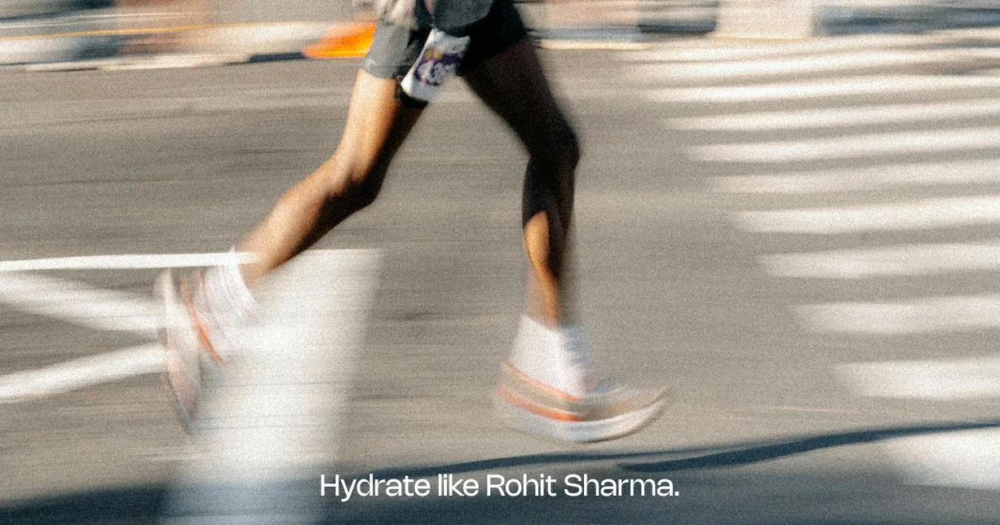
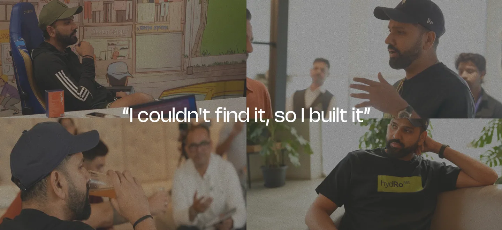
hydRo365 was created to make everyday hydration work harder for the way India actually lives. Founded by Rohit Sharma and developed with experts across sports performance, wellness and nutrition, the brand brings elite-level hydration for India. We designed the website to communicate a shift, from a sports-first product to an everyday performance essential for athletes, professionals, commuters and anyone navigating India’s heat, pace and demands.
We built a website that balances the precision of performance science with a bold, energetic visual language - using a palette inspired by India’s heat, energy and sporting culture. The result is a user experience that feels easy, familiar, credible and high-performance.
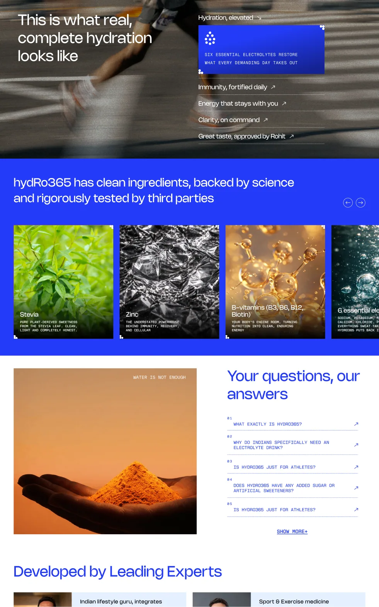
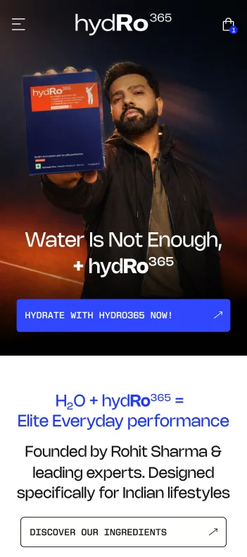
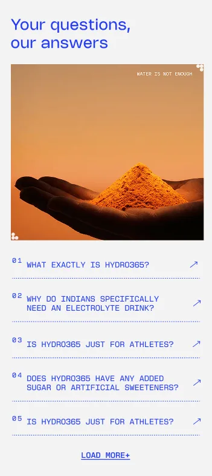
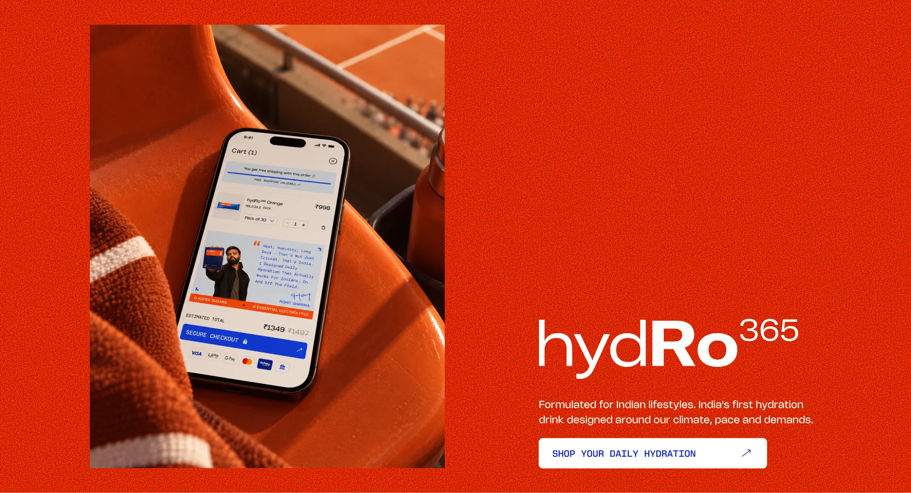
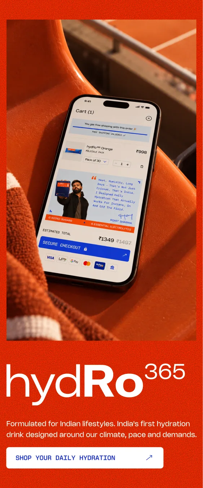
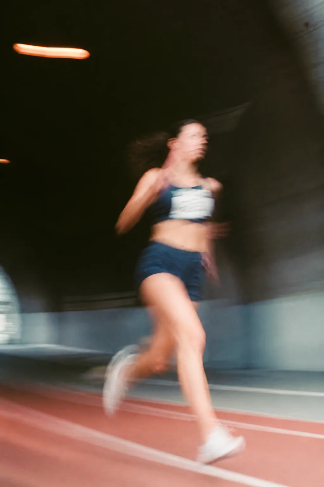
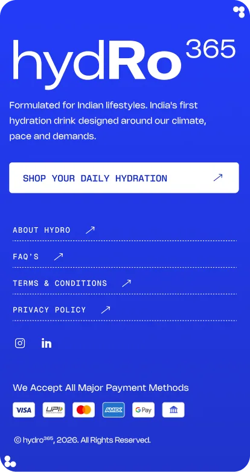
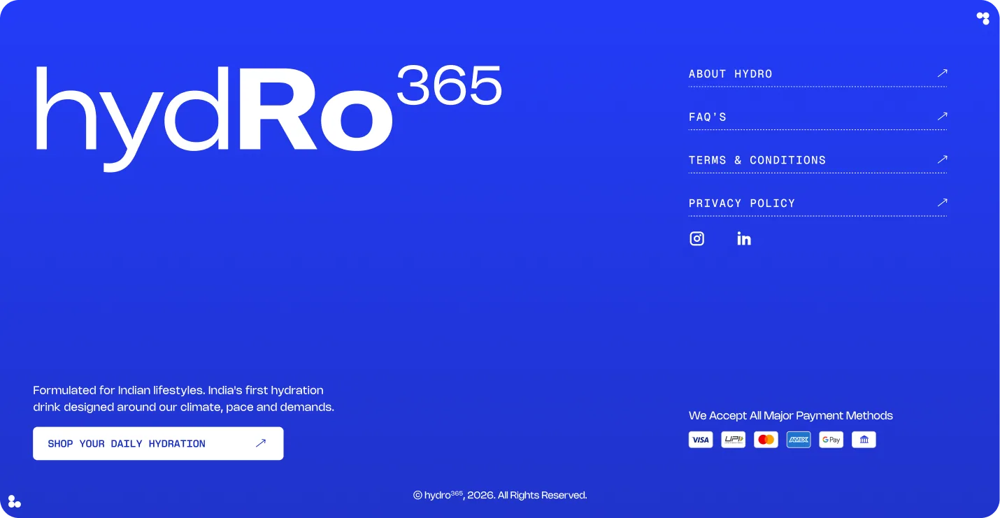
The visual language is built around blue - confident, energetic and unmistakably connected to hydration and sports, balanced with flashes of orange that bring in the heat and vibrancy of India. We kept the interface intentionally clean and direct no crowded UI, no unnecessary visual noise, and no over-explaining. The product and its efficacy stay at the centre, while bold colours, sharp layouts and considered white-space give the experience the confidence of an elite performance brand.
Every detail works to reinforce the brand. Custom iconography creates a visual system that feels intuitive, energetic and science-backed, while giving the interface its own distinctive character.
The result is a website that doesn’t preach about hydration; it makes the case for it.
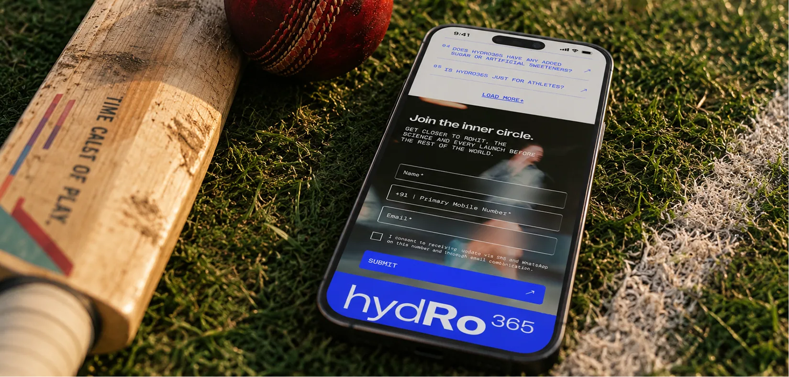
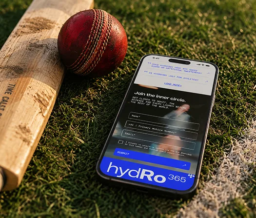
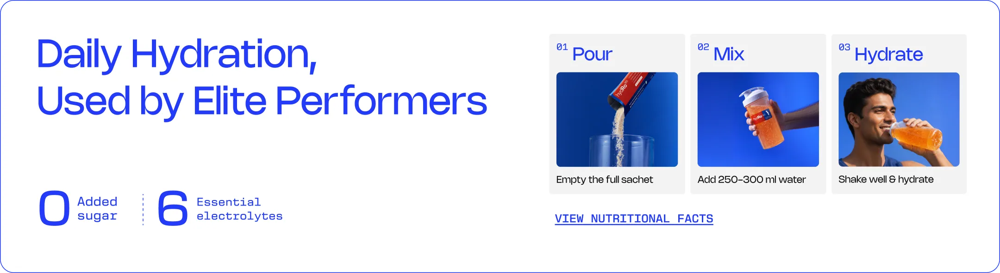
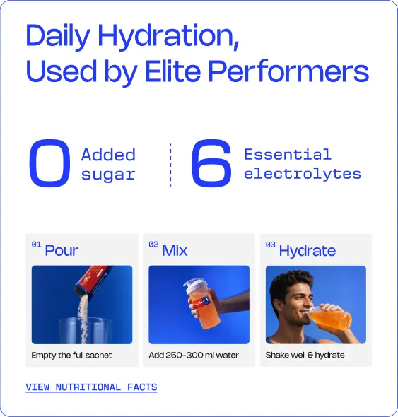
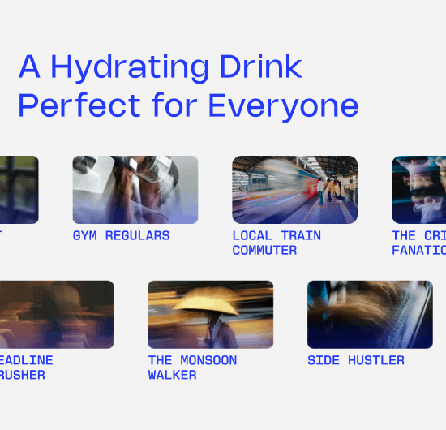
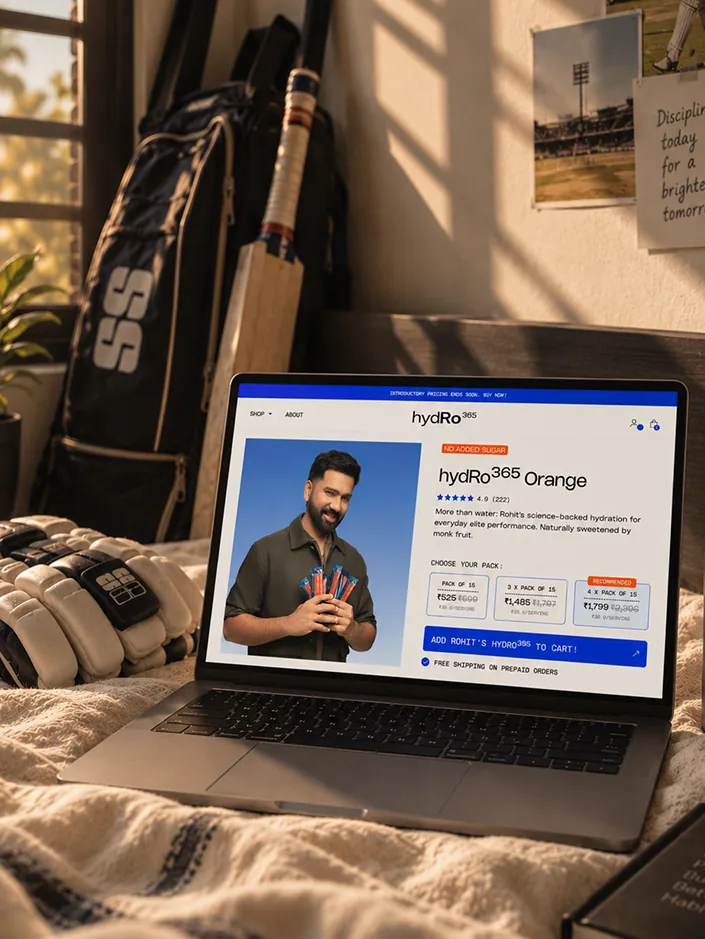
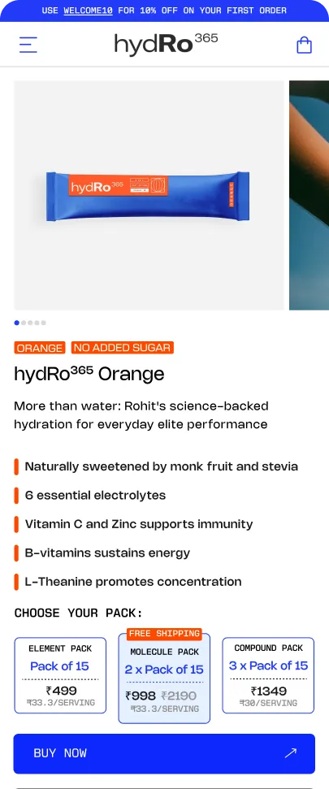
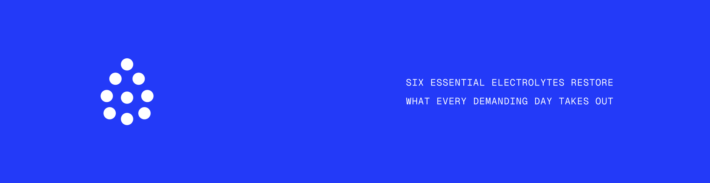
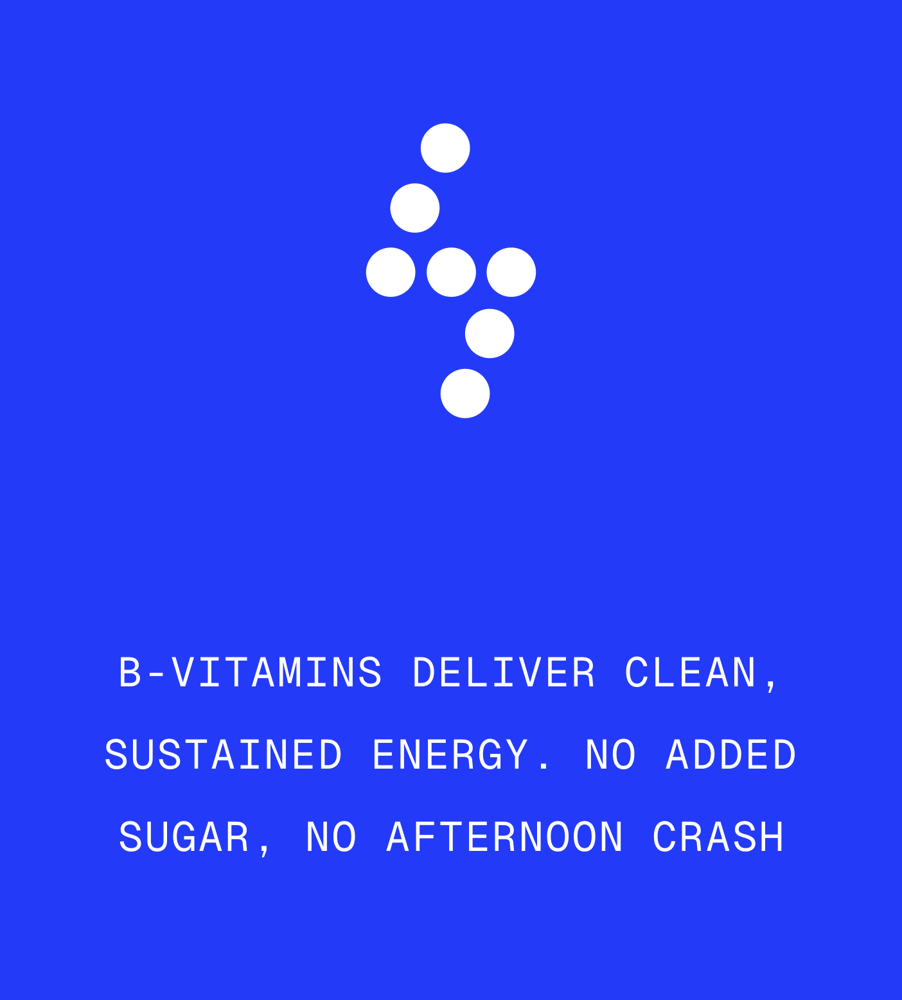